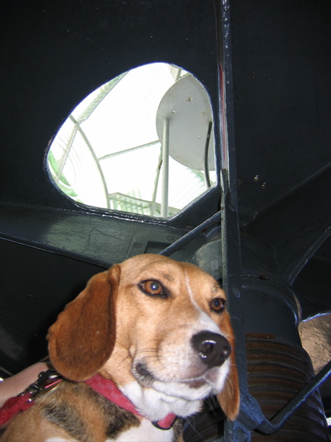

<--Previous Up Next-->

At the top of the lighthouse
Huxley climbed the 145 spiral steps to the top of the Point Arena light. Above him is the rotating platform that holds the light's first-order Fresnel lens, one of the world's largest. (For a Fresnel lens, "first order" means "really big".)